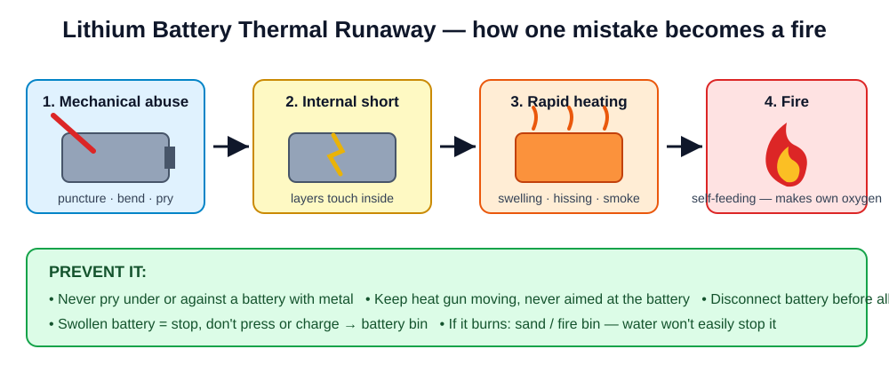
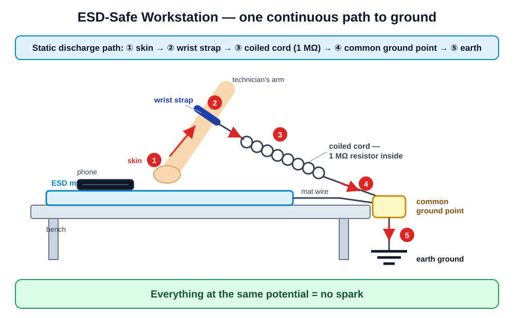
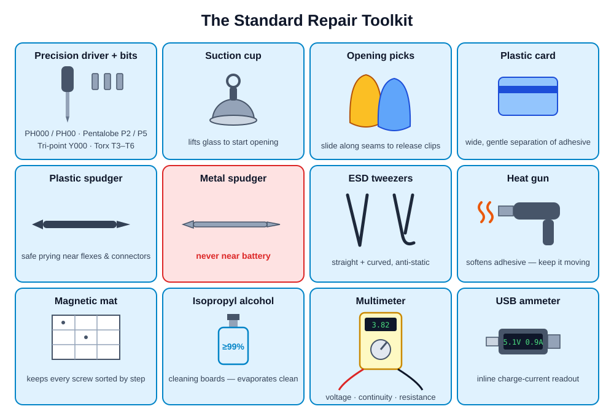

Before you ever open a phone: protect yourself, protect the device.
Day 1 of 5 · morning block · ~1 h theory · bench practical · quiz
Welcome everyone. Do a round of introductions: name, why they joined, one phone fault they've personally had. Write recurring faults on the whiteboard — you'll refer back to them ("we cover that in Module 5").
Frame it as professional identity: "Anyone can pry a phone open. A technician opens it so it still works afterwards. Today separates you from the person with a butter knife on YouTube."
| Day | Modules (5 h/day) |
|---|---|
| 1 | Safety, Tools & ESD · Phone Anatomy |
| 2 | Disassembly & Reassembly · Screen Replacement |
| 3 | Battery & Power · Ports & Small Parts |
| 4 | Soldering Fundamentals · Water Damage |
| 5 | Software & Diagnostics · Business Skills → Final exams → Certification |
Explain grading: 20% quizzes, 30% lab rubrics, 20% written final, 30% practical final. Pass = 70% overall AND passing the practical exam. Attendance: at least 4 of the 5 days.
Every phone contains a lithium battery — a small, flammable energy bomb if mistreated.
A spark you can't feel can kill a phone's chips — sometimes weeks later.
Everything in this module exists because of these two.
Hook slide — keep it dramatic but honest. Both hazards are invisible until it's too late, which is why beginners dismiss them. Promise demos of both today.
For each rule give a consequence story. Rule 2 example: a tech replaced a screen with the battery connected — the backlight circuit shorted on reconnection, turning a $30 repair into a dead board. Ask class to suggest what could go wrong before you reveal each story.
These rules are graded. Repeated violations = no certificate, regardless of skill.
Point at the physical battery bin and fire extinguisher now — make every student physically look at where they are. Announce that you'll ask random students to recite rules at the start of every future session.

Walk the diagram left to right: puncture or bend → internal short circuit → heat → electrolyte ignites → thermal runaway (self-feeding). Key point: water doesn't easily stop it — the battery makes its own oxygen. Smother with sand or let it burn out in the bin.
resources/videos.md (Video 1.1)Answers: (1) prying under the battery with a metal tool, and overheating it with the heat gun. (2) Drop it in the battery bin / on the concrete floor away from people — do NOT carry it across the room slowly, do not blow on it, alert the trainer. Then demo the swollen battery in its sealed container — students look, never touch.
So every discharge that damages a phone is one you never felt happen.
Do the balloon demo here: rub balloon on hair, lift paper scraps. "You felt nothing — that force is thousands of volts of static." If you have a piezo lighter igniter, click it near your thumb to show a real (harmless) spark.
Chip dies instantly. Phone won't boot. You know immediately.
Chip is wounded, works today… fails in 2 weeks. Customer returns furious. You never learn why.
Latent damage is why "I've never had an ESD problem" is never true — you just never traced it back.
This is the key persuasion slide. Ask: "Whose reputation dies when the customer's phone fails two weeks after your repair?" ESD discipline is business protection, not just electronics theory.

Trace the path on the diagram: your skin → wrist strap → coiled cord (contains a 1 MΩ safety resistor) → common ground point → mat → earth ground. The resistor protects YOU if you touch mains power while strapped. Everything at the same potential = no discharge.
resources/videos.mdDemo the full setup live on the demo bench, including the strap tester. Trick question for the class: "Why is a strap with a broken cord WORSE than no strap at all?" — false confidence; you stop being careful because you think you're grounded.
Good habits cost nothing. In this classroom, the full setup is mandatory anyway.
Be honest: many working techs skimp on ESD. Our standard is the professional one, and their rubric grade depends on it. Edge-handling and anti-static bags are the habits that survive into any environment.

From here to slide 20, hold up each REAL tool as it appears. Pass tools around the room while you talk. Physical contact with tools beats any slide.
| Head | Sizes | Found in |
|---|---|---|
| Phillips (+) | PH000, PH00 | Most Android internals |
| Pentalobe (5-point ★) | P2, P5 | iPhone bottom screws |
| Tri-point (Y) | Y000 | iPhone internals, AirPods |
| Torx (6-point ★) | T3–T6 | Older phones, laptops |
Hold each bit up to the camera/projector. Common beginner disaster: using a Phillips on a Pentalobe "because it sort of fits" — it strips the head and now the phone can't be opened without drilling. Sort-of-fits = doesn't fit.
If it slips, it strips.
"Long screw damage": the wrong screw in the wrong hole drills through the circuit board. It has killed thousands of phones. Screw mapping prevents it.
Draw a quick screw-map grid on the whiteboard: mat divided into zones matching phone areas. From Module 3 on, an unmapped bench loses rubric points automatically.
Show the difference in flex between a pick and a metal spudger. Rule of thumb: metal touches metal frames only. If a tool CAN puncture a battery, it never goes near one — connect this back to the fire video from slide 8.
Fast, targeted, easy to overdo. Keep it moving, 10–15 cm away.
Even, gentle, beginner-safe. Slower but hard to get wrong.
Demo: heat a donor phone edge, let students feel "correctly warm" with the back of a finger. This calibrates their hands before Module 4 where they heat screens for real.
Show a multimeter beeping on a paperclip — that's 80% of how they'll use it in this course. Plug the USB ammeter into a charging phone and read the current aloud. Both get full lessons later (Modules 5–7); today is just recognition.
A customer judges your shop by your bench before they judge your work.
Set the culture now: last 10 minutes of every session is cleanup, and you inspect. It feels strict on day one and becomes automatic by week three.
Class: listen for anything missed — you're the reviewers.
Teach-back exposes gaps cheaply. Correct gently, praise specifics. If both go well, you're ready for the practical; if not, re-demo the weak part yourself before labs.
| Station | Task |
|---|---|
| A | Build & verify an ESD workstation from scratch |
| B | Tool identification: 20 tools — name + purpose |
| C | Driver matching on donor phones — zero stripped screws |
| D | Safety scenario cards — act out the correct response |
Worksheet: practicals/practical-01-safety-tools-esd.md
Assign pairs to benches (mix experience levels). Rotate stations every ~25 minutes. Grade with the rubric as you circulate — don't leave grading to the end.
Next: Module 2 — what's actually inside a phone.
Hand out the quiz from assessments/module-quizzes.md. While they take it, do bench inspections. Collect quizzes, preview Module 2 in one sentence, dismiss.